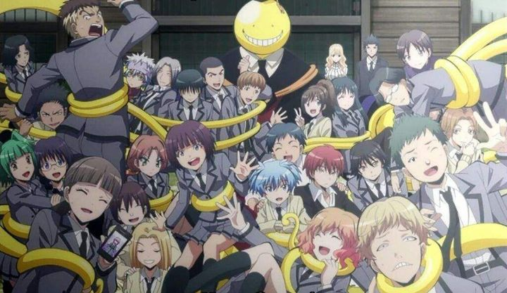

"Assassination Classroom" is a good alternative to "My Hero Academia," as both are effectively long-running shonen anime meant for younger teenagers ("Attack on Titan" and "Demon Slayer" are a little too violent to recommend to anyone under the age of 16). It also has a fun and unique premise: a yellow tentacled alien threatens to destroy the Earth, but wishes to teach a junior high class for a full year before he does so. Under those circumstances, the government tasks the Japanese class of a couple-dozen kids to literally assassinate their new octopus teacher within those 12 months. Easier said than done: "Koro-Sensei" can move fast enough to appear invisible, can morph is soft body into any number of shapes, and is invincible to bullets. How are they supposed to hit him, let alone kill him?! So they have to be clever, all while learning life lessons with their new teach..... who wouldn't want to watch after hearing that premise?There are some clever points to the details. From the get-go, the government provides special rubber knifes and bullets that are effective against Koro-Sensei, a convenient excuse to say the kids of class 3-E aren't using real weapons (their ages appear to be between 12 and 14). Of course, there's a huge question about WHY an alien would want to teach human kids at all. Koro-Sensei's eccentric and caring personality happens to make him an excellent teacher, complete with the anime-styled confidence you'd expect ("Hold your heads up high! You are assassins! YOU ARE E-CLASS!"). For all the anime set in high-school, I don't think I can recall many that were actually about the classes themselves, so Koro-Sensei might very well be one of the best anime teachers ever. As fun and as pure (?) as the premise is, it is a little one-note. The first episode already gives a strong feel towards the "kids-learning-life-lessons" thing, and hints at the alien's mysterious origin and backstory. It turns out the real plot, and villain (besides all the dangerous external assassins trying to steal the student's mark to collect the bounty themselves), comes from the prep school E class belongs to. E class isn't made up of literal assassins in training, but just delinquints with low grades. The school's strategy has always been to stick the worse kids in the bottom-ranked class, learning in an outdated shed of a building without modern resources or conveniences. They even encourage bullying from classes A through D against E to keep them down. Why? It scares the rest of the school to perform well to not get stuck in E. By the Principal's design, the school is the top one in Japan, at the sacrifice of a few kids with no future. You can imagine the emotional problems this causes to the poor students...Anyway, smart premise with topical political commentary, but again, if you've seen the first episode, you've seen them all. It doesn't help that this show is about 3x as long as it should be, ultimately at 47 episodes, plus a spin-off series and comilation movies. There'd be no reason to watch unless the show was especially fun.Thankfully, "Assassination Classroom" is fun. The frequent assassination attempts are clever, and Koro-Sensei's effortless evading is silly. His teaching style and personality (occasionally lonely when not spending time with his students) is even more ridiculous. Comedy doesn't always work in anime (and at first, the frantic direction makes it hard to catch every joke in this case), especially over the long term, but "Classroom" manages to keep a stable level of entertainment throughout most of the episodes.  It's worth mentioning that unlike other shonen anime with over 30 episodes, "Classroom" has a definitive ending, and a good one at that. The second-half of the second season does make some large leaps in logic (it even involves a mission where some students go to outer space for an arbitrary reason), but there are so many satisfying developments in how things are handled. As predicted from the first episode, the ending is bittersweet and made me cry a little, a shame since there were multiple avenues where a happier ending could have been written in, but it would have also taken away from the show's power. As silly as the show's story was, I appreciated the character development and commitment to see things through to the end.The themes and good humor even make "Classroom" a rare good choice for younger kids to watch. Well, almost... the whole concept of kids trying to kill their teacher is a little problematic, especially when one of the most "talented" students is Class E is violent to the point of being dangerous, both to Koro-Sensei and other humans. Funimation's English dub also chooses to use some strong language; sure, junior high students probably know words like "b*tch" already, but it still isn't appropriate. Same goes for the mild suggestive themes (one professional assassin teacher that joins the group uses her femine charms to get close to her targets), and increasingly greater shows of violence. With this in mind, mature kids around the age of 14 is probably right, still a good entry series for younger teens compared to other popular anime. Animated by studio Lerche, "Assasination Classroom" looks like it was made by the studio behind the "Danganronpa" anime (and it was). The show is bright and colorful, perhaps a little too much so, and I couldn't tell if it looks good or cheap. Koro-Sensei's design is iconic, but also a little weird (I have no idea how you should design a yellow alien anyhow, so nevermind). Animation meets modern expectations, and the frequent asassination attempts help give an excuse to always have something moving on screen. Music is mostly just servicable and expected, most defined by the choreographed jumping dance in the openings and the melancholy ending themes. Funimation's English dub happened to be one of their earlier "broadcast dubs," and for the most part is great, despite a few odd pronounciations of words (in English). Koro-Sensei's English voice in particular is spot-on, but the same can be said of the other adult characters, and relatively speaking, even the children (per usual, voiced by adults pretending to be children). The Bluray release has some bonus features, including a bunch of fun and insightful commentary, wherein I learned that the series is loosely inspired by the classic tale "47 Ronin," even with key characters sharing names between them (perhaps the 47-episode series length is also a Easter egg there). Also, that Koro-Sensei's English actor is a teacher in real life as his side-gig (a reminder that voice-acting is not a sustainable career on its own). There isn't much exceptional about "Assasination Classroom," but it makes for a great series to latch onto and recommend to a larger audience. Much like school, even with only modest expectations going in (and not much in the show to exceed them), the longer I spent with the anime, the harder it was to say goodbye. And it's fun enough to recommend for its comic merits alone; for most of the runtime, I had a large grin across my face.
- "Ani" More reviews can be found at : https://2danicritic.github.io/ Previous review: review_Arion Next review: review_Attack_on_Titan_-_Season_1